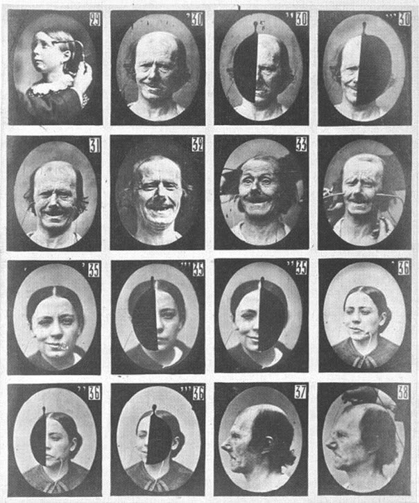
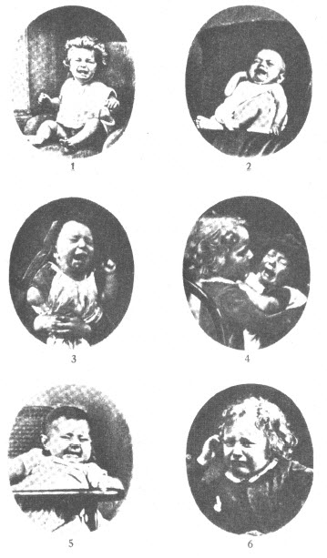

第6章
人类的特殊表情——痛苦和哭泣
·Special Expressions of Man：Suffering and Weeping·
我们必须把哭泣看做是一种偶然的结果，也像眼睛外侧受到打击而分泌眼泪或者视网膜受到明亮光线的作用而打喷嚏的情形一样是无目的的，但是我们仍旧可以毫无困难地理解到为什么眼泪的分泌是用来减轻苦恼的原因。如果哭泣愈是激烈或者愈是采取歇斯底里性质，那么它也就愈加能够减轻苦恼；这也是和全身痉挛、咬牙切齿和发出尖锐叫声的情形一样，都根据同一的原理，要在折磨的苦痛之下使它减轻。

杜庆虽然没有创立出任何关于表情的理论来，但是他首先利用电流刺激面部各种肌肉，人工复制出各种不同的表情来，达尔文认为这种方法是伟大的功绩。在本书中，达尔文多次引证了杜庆的研究照片。
婴孩的尖叫和哭泣——面部的形态——开始哭泣的年龄——习惯性抑制对哭泣的作用——啜泣——眼睛周围肌肉在尖叫时候收缩的原因——流泪的原因
在现在这一章和以后几章里，我将尽自己所有的能力，来叙述和表明人类在各种不同的精神状态下所发生的表情。我打算依照我以为最便利的次序，来布置自己的观察资料，以便使反对的情绪和感觉一般可以彼此相继地提出来。
身体和精神的痛苦：哭泣——在第三章里，我已经讲述到极端苦痛的表征，例如用尖叫或者呻吟、用全身痉挛和牙齿咬紧或者互相磨动来表示这种情绪。在这些表征出现的时候，或者在出现以后，还冒出大汗，脸色苍白，身体发抖，虚脱或者昏厥。再也没有比极度的恐惧和大惊所发生的痛苦更加强烈的痛苦了，但是在这种情形里却有一种十分特殊的情绪在发生作用，因此我们将在另一处地方再来考察它。长久连续的痛苦，尤其是精神上的这种痛苦，就会转变成为意气消沉、悲哀、沮丧和失望；这些情绪将作为下一章里所考察的主题。在现在这一章里，我打算差不多专门来考察哭泣（weeping）或者哭喊（crying），特别是更多地考察小孩方面的哭泣。
婴孩甚至在受到轻微的苦痛、平常的饥饿和感到不舒适的时候，就发出激烈的长久连续的尖叫来。在作出这样的尖叫来的时候，他们的眼睛就紧闭起来，因此眼睛周围的皮肤起有皱纹，而前额则皱缩起来。嘴张开得很大，而双唇则以奇特状态向后退缩，因此就形成一种近于四方的形状；牙龈或者牙齿多少显露出来。同时，呼吸差不多带有痉挛的性质。在婴孩尖叫的时候，去观察他们的表情，是一件容易的事情；可是，我发现，那些用极迅速的方法拍摄到的照片，就是最良好的观察资料，可以使人去进行更加精密的分析。我已经收集到12张照片；当中大多数照片是专门为了我的需要而摄制的，而且它们全都表示出同样的一般特征来。因此，我在它们当中选取了6张， (1) 用胶版术把它们复制出来（照相图版I）。

照相图版 I
眼睑紧闭和因此而发生的眼球受到压缩（这是各种不同的表情当中的最重要的部分），是为了保护眼睛以免过度充血而采取的动作；在下面就要来详细地说明它。至于说到几种肌肉在紧紧压缩眼睛时候的收缩次序，那么南安普敦（扫桑波顿，Southampton）的朗斯塔夫（Langstaff）博士曾经做过了几次观察，我应当向他表示感谢；后来我也重复做了几次核对观察。最良好的观察这种次序的方法，就是：使一个人先把双眉扬起，这样就使额上显出横皱纹来；此后，再尽可能用力使眼睛周围的一切肌肉极度缓慢地收缩起来。不懂得面部解剖学的读者，应当去参看图1 —3 。显然皱眉肌（corrugator supercilii ）是首先收缩的肌肉；这些肌肉把双眉向下和向鼻梁的内侧牵引，使眉心出现纵沟纹，也就是皱眉；同时，它们又使前额上的横皱纹消失。眼轮匝肌差不多和皱眉肌同时收缩，所以在双眼周围都起皱纹；可是，在皱眉肌一给予眼轮匝肌某种支持力的时候，眼轮匝肌就显得更能够用巨大力量来收缩。最后，鼻三棱肌也收缩起来；这些肌肉就把双眉和前额的皮肤更加向下牵引，因此在鼻梁上就产生出短小的横皱纹来。 (2) 为了叙述简便起见，我们以后就把这些肌肉通称为眼轮匝肌或者眼睛周围的肌肉。
在这些肌肉强烈收缩的时候，那些和上唇相联结的肌肉， (3) 也收缩起来，并且把上唇提升起来。如果去注意到它们当中的甚至一种肌肉——颊肌（malaris）——和眼睛周围的肌肉的联系状况，那么也就应该预料到这一点。任何一个人在逐渐收缩自己双眼周围的肌肉时候，就会感觉到，当他增加收缩力的时候，上唇和鼻翼（它们部分地受到眼睛周围肌肉之一的作用）差不多时常被略微向上提升起来。如果在眼睛周围的肌肉收缩时候，把嘴紧闭起来，此后突然把双唇放松开来，那么他就会感觉到，双眼所受到的压力马上增大起来。还有，如果一个人在明亮的耀眼的白天里想要去瞧望远处的物体，但是又不得不把眼睑一部分闭起（眯起眼睛），那么差不多时常可以观察到，他的上唇有些向上升起。在有些不得不经常要眯起眼睛来的极其近视的人当中，他们的嘴就由于这种相同的原因而带着露齿而笑的表情。
上唇的上升动作，把双颊的上部的肉向上牵引，因此在各个面颊上都出现一条显著的皱襞，就是鼻唇沟（naso-labilii fold）；它从鼻孔两翼的附近处开始，通向嘴角和它们的下面。在这里所附的照相图版I里的各图上，都可以看到这种皱襞或者鼻唇沟；它也是个哭喊的婴孩的很显著的特征；可是，在出声的笑和微笑的时候，也有差不多相似的皱襞出现。 (4)
因为在发生哭叫的动作时候，就像刚才所说明的状况那样，上唇向上提升得很厉害，所以口角降肌（参看此处 ）为了要使嘴大张开来而强烈收缩，因此也就可以把声音充分向外吐出。这些位在上下双方的相反的肌肉，就要去把嘴形成长椭圆形、近于长方形的轮廓，正像所附的照片上的嘴的形状。有一个卓越的观察者， (5) 在叙述到一个正在被喂食而发生哭喊的婴孩时候写道，“他把自己的嘴张开成长方形，并且让被喂进去的乳粥从它的所有四角里淌流出来”。我以为，口角降肌要比它们的邻近的肌肉较少受到意志的独立支配，但是我们将在后面的一章里再谈到这个问题；因此，如果一个幼年的婴孩在刚才有些想要哭喊的时候，通常就会先把口角降肌收缩起来，并且在哭喊以后也是最后才停止它的收缩动作。年纪较大的小孩在开始哭喊的时候，时常先把那些和上唇联系的肌肉收缩起来；可以认为，这种情形大概是由于年纪较大的小孩并没有像婴孩那样强烈地发出大声尖叫来，因此也没有把嘴大张开来的倾向，所以上面所说的口角降肌也没有发生这样强烈的作用。
在我的一个婴孩出生以后第八天和以后有一段时间里，我时常从他那里观察到，当看到他的一阵哭叫在逐渐发生出来的时候，它的最初的表征就是略微皱眉；这是由于皱眉肌的收缩而发生的，同时裸出的头部和面部的微血管因为充血而变成红色。当这一阵尖叫真正开始发出的时候，眼睛周围的所有肌肉就强烈收缩起来，而嘴就像上面所讲过的状况那样大张开来；因此，这种初期的面貌变化也和年纪较大的婴孩的面貌变化相同。
皮德利特博士 (6) 认为，有几种把鼻子向下牵引和把鼻孔缩小的肌肉的收缩动作，是哭喊表情的显著的特征。口角降肌正像我们刚才已经看到的，通常也同时收缩起来；根据杜庆的说法，这些肌肉也同样地要去对鼻子起有间接的作用。在患重伤风的小孩方面，也可以观察到鼻子同样变得狭窄的外貌；朗斯塔夫博士曾经对我说，这种情形至少一部分是由于他们经常用鼻子吸气，因此外面的空气向鼻孔两侧发生压力。患重伤风的小孩或者哭喊的小孩把鼻孔缩小的目的，大概是要阻止鼻涕和眼泪向下流，并且防止它们流到上唇上面去。
在作了一阵长久的激烈的尖叫以后，由于激烈的用力呼气阻止了血液从头部回流，而使头皮、面部和双眼变成红色；可是，受到刺激的眼睛主要还是由于流泪太多而发红。面部的各种受到强烈收缩的肌肉，仍旧略微有些痉挛；上唇也略微被向上提起或者向外翻出， (7) 同时嘴角仍旧略微被向下牵引。我亲自感觉到，而且还从其他的成年人方面观察到，如果在阅读一本悲惨小说的时候，难以去制止流泪，那么同时也差不多不能去阻止某些肌肉发生轻微的痉挛或者颤动；这些肌肉就是各种被幼年的小孩在尖叫发作时候所强烈推动的肌肉。
保姆和医生都清楚地知道，婴孩在幼小的时候不流泪，或者不哭泣。 (8) 这种情况不单单是由于当时泪腺还不能够分泌出眼泪来。有一次，我在无意中偶然用自己的外套的袖口擦碰了我的婴孩（当时他的年龄是出生以后77天）的一只张开的眼睛，引起了这只眼睛自由地流出泪水来，因此我就第一次注意到了这个事实；当时这个婴孩虽然激烈地尖叫起来，但是他的另一只眼睛仍旧是干燥无泪，或者只不过是略微被泪水湿润。当这个小孩年龄到122天的时候，即使他发出激烈的尖叫，他的眼泪也不会流出到眼睑上和从面颊上滚落下去。再过了17天，就是在出生以后139天，他方才第一次从眼睛里流出泪水来。有人替我观察了另外几个婴孩；结果知道，婴孩最初自由流出眼泪来的哭泣的年龄各有不同。有一个婴孩，在出生以后还只有20天，在他的眼睛已略微含有泪水；还有一个小孩，则在出生以后62天出现这种现象。再有两个小孩，在出生以后各84天和110天的时候，还没有眼泪从面部流下来；而另有一个小孩，则在出生以后104天就有眼泪流下来。我可以确实肯定说，有一个婴孩，在特别早的年龄——出生以后42天——就流出了眼泪来。 (9) 各种不同的遗传传递的交感性动作和嗜好，在它们被固定下来和完善起来以前，需要有几分训练；因此，我以为，泪腺是和这些情形有些相似的，在它们容易受到刺激而分泌泪水以前，也需要在个人方面有几分训练。在哭泣这种习惯方面看来，这一点显得更加近于其实；哭泣一定是在人类从人属（Homo ）和不会哭泣的类人猿的共同祖先方面分支出来以后，方才被人类所获得的。
使人值得注意的事实，就是：人在年纪很幼小的时候，即使受到苦痛和发生任何其他精神上的情绪，也不流泪；可是在年纪较大以后，哭泣反而成为最一般的表情，或者是最强烈而显著的表情。在婴孩一获得这种习性以后，如果再受到各种各样的痛苦，不论是身体上的苦痛，或者是精神上的痛苦，甚至是有其他的情绪（例如恐惧或者大怒）同时一起出现，那么他就会发出最明显的哭泣来。可是，根据我从自己的婴孩方面的观察，在很幼小的年龄时候，哭喊的性质就发生变化，就是：愤怒时候的哭喊和悲哀时候的哭喊不同。有一位太太告诉我说，她的一个有9足月的小孩，在发怒而高声尖叫的时候，却不哭泣；可是，在把她的小椅子转过去，使椅背对着桌子，用这种方法来处罚她的时候，她就会流出眼泪来。我们大概可以认为，这种差异就在于：第一，哭泣可以被抑制住，正像在下面马上就可以看到的在年龄较大的时候，除了悲哀以外，在很多情况下都可以抑制住哭泣；第二，这种抑制的本领是遗传而来的，所以它在最初被运用的时期以前更早的生活期间里就发生了影响。
在成年人方面，尤其是在成年的男人方面，哭泣不再由于身体上的苦痛而发生，或者成为这种痛苦的表情。可以说明这种情形如下：无论是在文明的民族里或者在未开化的民族里，男人总是认为，用任何外表的特征来表明身体上的苦痛，是一种软弱和无丈夫气概的表现。除了这方面以外，未开化的人会由于其他很微小的原因而痛哭流涕起来；柳波克爵士曾经收集到一些关于这方面的事实。 (10) 在新西兰地方，有一个酋长，“因为水手们用面粉撒到他的心爱的斗篷上面，使它变得脏污，而像婴孩一样哭喊起来”。在火地岛上，我曾经看到一个土人；他最近丧失了自己的兄弟，因此他就有时发出歇斯底里式的乱哭乱喊，有时就对任何使他感到有趣的事情发出衷心的笑声。在欧洲的文明的民族当中，发生哭泣的快慢程度也各有很大的差异。英国人除非受到极大的悲哀压迫，通常很少发出哭喊来；而欧洲大陆上的有几处的人则很容易自由地流出眼泪来。
大家都知道，精神病患者使自己的一切情绪尽量表现出来，极少去抑制它们，或者完全不去抑制它们；据克拉伊顿·勃郎博士告诉我说，单纯忧郁病的最显著的特征，就是在最细微的情况下，或者无缘无故，就会发生哭泣的倾向；甚至是患有这种病的男人也是这样。这些病人在有任何的真正悲哀原因出现时候，也作出很不相称的哭泣来。有些病人哭泣所经历的时间，长久得使人吃惊；而他们所流出的眼泪也是多得使人吃惊。有一个患忧郁病的女郎曾经哭泣了一整天；后来勃郎博士发表说，她的哭泣原因，只是在于她回想到以前她有一次为了要加速眉毛的生长而剃去了眉毛的事情。在他的精神病院里，有很多病人时常长久坐着，把身子前后摇动；“如果有人去向他们说话，那么他们就会停止摇摆，眯起眼睛，让嘴角下垂，并且突然哭喊起来”。在这类情形当中，有几次对他们所说的话，或者是亲切的招呼问候，大概会引起他们发生某种幻想的悲伤的想象来；可是，也有几次，任何种类的努力都会引起哭泣，却和任何悲伤的观念毫无关系。剧烈的癫狂病患者，也会在错乱的谵语当中，发出一阵阵痛哭流涕或者泣诉来。可是，我们也不必过分强调精神病患者的大量流泪是由于缺乏一切抑制作用的结果；要知道，有些脑病，例如半身不遂、脑软化和歇斯底里衰弱症，也具有一种引起病人哭泣的特殊倾向。哭泣是精神病患者的普通表情；甚至他们在达到完全痴呆状态和丧失说话能力以后，也是这样。那些出生就是白痴的人，也曾哭泣； (11) 可是，据说矮呆子（克汀病患者）却不是这样［参看此处 ］。
我们从小孩方面可以看到，大概哭泣是任何一种受苦（不论是一种接近于极度苦恼的身体上的苦痛或者是精神上的痛苦）的最初的自然表情。可是，以前的事实和普通的经验向我们表明，如果经常重复去努力抑制流泪，而且和一定的精神状态联合起来，那么这就可以大大阻止哭泣的习惯。另一方面，显然哭泣的能力能够由于习惯而增强起来；因此，曾经长期侨居在新西兰的牧师台洛尔就肯定说， (12) 当地妇女能够随意流出大量的眼泪来；她们为了哭吊死者而集合在一起，并且由于会“用做作的姿态”来哭喊而自傲。
单单由于泪腺作一次抑制的努力，还是收效很少；实际上，时常好像反而会引起相反的结果来。有一个年老而有经验的医生告诉我说，他时常发现，在有些妇女来请他诊断并且想要抑制哭泣的时候，唯一的阻止她们突发的痛哭的方法，就是：他恳切地请求她们不要去抑制哭泣，同时要确信长时间的尽量哭喊反而会使她们的病情减轻 (13) 。
婴孩的尖叫，是由延长的呼气再加上短促、迅速而差不多痉挛的吸气所构成；在年纪稍大的时候，还伴随着啜泣（呜咽）。根据格拉希奥莱所说，在啜泣的时候，主要是声门（喉口，glottis）受到影响而动作起来。“在吸气克服了声门的阻力和空气冲进胸部的时刻”， (14) 这种啜泣声就发生出来，而且可以被听闻到。可是，整个呼吸动作也是痉挛性的和激烈的。同时，双肩一般向上耸起，因为这种动作可以使呼吸变得更加容易些。在我的一个婴孩出生以后17天的时候，他的吸气很迅速和强烈，几乎达到啜泣性质的程度；在他到138天的时候，我第一次观察到他的明显的啜泣；此后，他每次在一阵激烈的哭喊以后就发出啜泣声来。呼吸动作，一部分是随意的，而另一部分则是不随意的；我以为，啜泣的发生原因，至少一部分是在于：小孩在经过婴孩时代的初期以后，具有几分控制自己的发声器官和抑制尖叫的能力；可是，他们还具有很少控制呼吸肌肉的能力，所以这些肌肉在发生了激烈动作以后，仍旧要有一段时间继续作不随意的或者痉挛的动作。大概啜泣是人类所特有的动作，因为动物园里的饲养员对我肯定说，他们从来没有听到任何一种猿发出啜泣声来，不过猿类在被追逐和捕捉住的时候，常常高声尖叫，此后则作着长时间的喘气。因此，我们可以看出，在啜泣和自己流泪之间具有很大的类似，因为人类的小孩的啜泣，并不是在婴孩时代的早期就开始发生，却是后来比较突然地出现，而在后来则随着每次激烈的哭喊而发生，一直到年龄更大而这种习惯被抑制为止。
眼睛周围肌肉在尖叫时候收缩的原因——我们已经看到，婴孩和幼年的小孩在尖叫的时候，总是靠了眼睛周围肌肉的收缩而把双眼紧闭起来，因此眼睛四周的皮肤都起皱。从年纪较大的小孩方面，甚至从成人方面，也可以观察到，当他们发生激烈的不停地哭喊时候，这些同样的肌肉也有收缩的倾向，不过他们也时常为了要不妨碍视觉活动，而抑制这种收缩动作。
贝尔爵士就用下面一段话来说明这种动作：“不论在衷心的笑声、在哭泣、在咳嗽或者在打喷嚏的时候，每次在激烈的呼吸动作里，眼轮匝肌就把眼球紧紧压缩起来；因此这就支持和保护了眼球内部的血管系统，防止那种使血液在这时候向静脉方面输送的逆向冲动。当我们在收缩胸部和排除空气的时候，颈部和头部的静脉里的血液流动受到阻止；如果排除空气的动作更加强烈，那么血液不仅把血管扩大起来，而且甚至要去充满最细的微血管。这时候，要是不适当地压缩眼睛，对血液的冲压不加以抵挡，那么眼睛内部的柔弱的组织就可能遭受到不可挽救的伤害”。 (15) 其次，他又补充说：“如果我们把婴孩的眼睑扳开，去检查他的眼睛，使他由于激怒而哭喊和挣扎，那么因为他不再去对眼睛的血管系统作自然的维护，并且也不再去采取那些保护眼睛的方法，以便抵挡接着发生的血液奔冲情形，那么眼结膜就突然被血液所充满起来，而眼睑也因此向外翻转”。
根据贝尔爵士的断定，并且还根据我经常观察所得到的结果，不仅在尖叫、高声大笑、咳嗽和打喷嚏的时候，而且也在另外几种类似的动作时候，都会使眼睛周围的肌肉发生强烈收缩。一个人在激烈地擤出鼻涕的时候，就把这些肌肉收缩起来。我曾经叫自己的一个小孩尽量用力高声呼喊；每次当他开始呼喊的时候，他就坚强地收缩起眼轮匝肌来；我多次观察到这种现象；当我询问他为什么每次要紧闭眼睛的时候，我方才发现他完全不知道这种事实；原来他是本能地或者无意识地进行这种动作的”。 (16)
为了使这些肌肉收缩起见，用不到真正要把空气从胸部呼出；只要在闭住声门而不让空气向外逸散的时候，用大力把胸部和腹部的肌肉收缩起来就足够了。在激烈的呕吐和干呕时候，因为空气充满胸部而使横膈膜下降，此后，它由于声门闭住，“还有由于它本身的纤维的收缩”，而保持着这种位置。 (17) 接着腹部的肌肉强烈收缩起来，把胃脏压缩，使胃脏本身的肌肉也收缩起来，因此就把它的内含物呕吐出来。在每次作呕吐的努力时候，“头部大量充满血液，因此面部发红和胀大，并且面部和颞颥（太阳穴）的大静脉也显著地扩大起来”。同时，据我从观察方面所知，眼睛周围的肌肉就强烈收缩起来。同样也发生一种情形，就是：腹部肌肉用异常的力量向下压迫，使肠管里的内含物排除出去。
如果胸部的肌肉不发生强烈的动作，去排出和压缩肺部的空气，那么即使身体的肌肉作最大的用力，也不能够使眼睛周围的肌肉收缩。我曾经观察过自己的儿子们；虽然他们用大力做着体操，例如多次用双臂把身体吊升空中，并且把重物从地上举起，但是简直一些也看不出他们眼睛周围的肌肉收缩的痕迹。
正像我们以后将看到的，因为这些肌肉为了在激烈呼气时候保护眼睛而发生的收缩，间接上就成为我们的几种最重要的表情方面的一个基本要素，所以我非常急切地要去确定贝尔爵士的见解究竟可以被证实到怎样程度。大家知道，乌得勒支（Utrecht，荷兰的城市）的唐得尔斯教授， (18) 是欧洲最著名的研究视觉和眼睛构造的权威之一；他使用了现代科学所发明的很多精巧的仪器，极其亲切地替我去进行这方面的研究，并且已经把研究的结果发表出来。 (19) 他证明说，在激烈呼气的时候，眼球的外部、内部和后面的血管，都能够由于两种情形而充血，就是由于动脉里的血液压力增加和由于静脉里的血液的回流被阻止。因此，在激烈的呼气时候，眼睛的动脉和静脉的确或多或少扩大起来。在唐得尔斯教授的宝贵的研究著作里，就可以发现这方面的详细的证据。我们可以看到，在一个人由于一半窒息而激烈咳呛的时候，他的头部的静脉突出，面部发紫；这就是激烈呼气对于静脉的影响。根据这位权威的著作，我们也可以提出说，在每次激烈呼气的时候，的确整个眼睛略微向前突出。这种情形是由于眼睛后面的血管扩大而发生的，并且也可以从眼睛和脑子的密切联系方面来预料到；在把头盖骨的一部分取除去以后，我们就可以知道，脑子在随着每次呼吸而一升一降地运动着；在婴孩的头部的没有闭合的缝隙里，也可以看到同样的升降现象。我以为，被绞死的人的眼睛好像是从眼窝里跳出来的样子，这也是由于同样的理由而发生的。 (20)
至于说到在激烈的呼气的努力时候用眼睑的压力来保护眼睛方面，那么唐得尔斯教授从他的各种观察方面得出结论说，这种动作的确限制或者完全消除了血管的扩大 (21) 。他还补充说，在这些情形下，我们时常可以看到，手会不随意地举起，放到眼睑上面，好像要更加良好地支持和保护眼睛似的。
可是，现在还不能提出很多证据，来证明眼睛的确由于在激烈呼气时候缺乏支持而受到伤害；不过也已经有了几个证据。有一个关于这方面的“事实，就是：在激烈的咳嗽或者呕吐的时候，特别是在打喷嚏的时候，加强的呼气的努力有时就会引起眼睛的（外部的）小血管破裂”。 (22) 至于说到眼睛内部的血管，那么最近根宁（Gunning）博士记录到一个由于患百日咳而发生眼球突出的病例；根据他的意见，这种情形是由于眼球深处的血管破裂而发生的；还有一个类似的病例也被记录下来。可是，即使单单由于不舒适的感觉，恐怕也足够去引起这种用眼睛周围肌肉的收缩动作来保护眼球的联合性习惯。甚至是一种对于伤害的意料或者可能性，也足够诱发起眼睑不随意的霎动，正相似于一个物体在很接近眼睛处移动时候所发生的情形。因此我们可以从贝尔爵士的观察方面，特别是从唐得尔斯教授的更加细心的研究方面，来很有把握地做出结论说，小孩在尖叫时候的眼睑紧闭，是一种富于意义和实际用处的动作。
我们已经知道，眼轮匝肌的收缩动作，引起上唇向上提升；因此，如果嘴张开得很大，那么由于降肌的收缩而把嘴角向下牵引。由于上唇向上提升，双颊上的鼻唇沟也随着形成起来。因此，在哭喊时候，面部的一切主要的表情动作，显然都是由于眼睛周围的肌肉收缩而发生的。我们还可以看出，流泪也是由于同样这些肌肉收缩而发生的，或者至少也是和它们有相当的关系。
在有几个上面所讲到的情形里，特别是在打喷嚏和咳嗽的情形里，很可能眼轮匝肌的收缩，也可以作为一种保护眼睛以避免过分激烈的震荡或者振动的辅助手段。我也有这种想法，因为狗和猫在啃咬坚硬骨头的时候，时常把眼睑闭住；至少有时在打喷嚏的时候是这样的；不过狗在高声吠叫的时候却不发生这种现象。塞登先生曾经替我仔细观察了幼年的猩猩和黑猩猩；他看出，这两种猿在打喷嚏和咳嗽的时候，常常闭住眼睛，但是在激烈地尖叫的时候则不闭眼。我曾经把一小撮鼻烟给美洲产的一种猿，就是卷尾猿（Cebus）；它在嗅闻以后，每打一次喷嚏，就把眼睑闭住；可是，在后来有一次高声呼叫的时候，却没有把眼睑闭住。
眼泪分泌的原因 (23) ——在任何一个关于精神受到影响而引起流泪的理论里，一定要考虑到一个重要的事实，就是：每次在眼睛周围的肌肉作强烈而不随意的收缩，以便压缩血管而因此保护眼睛的时候，就有眼泪分泌出来，时常因为分泌得很多而从面颊上滚落下来。在最相反的情绪之下，甚至在完全没有情绪的时候都会发生流泪的情形。在这些肌肉的不随意的强烈收缩和眼泪的分泌之间的关系的存在情形方面，有一个唯一的例外，而且也只不过是一部分的例外，就是幼年的婴孩没有这种情形：幼年的婴孩在紧闭眼睑而发出激烈的尖叫时候，通常不哭泣出泪来；他们要到2个月、3个月或者4个月的年龄时候，方才会流泪。可是，他们在很早的时候也分泌眼泪，而使它充满在眼眶里。前面已经指出，显然可以认为，这时候泪腺由于缺少练习或者另一种原因，而不能在极幼小的年纪时候起有完善的机能活动。在年纪稍大的小孩方面，由于任何痛苦而发生的哭喊或者哭泣，总是经常和流泪同时出现，所以哭泣（weeping）和哭喊（crying）就成为同义词了。 (24)
在相反的情绪即大乐或者喜悦的时候，如果同时发出的出声的笑是适度的，那么眼睛周围的肌肉就简直没有什么收缩，因此也不发生皱眉；可是，用急速而激烈的痉挛性呼气来发出一阵阵哈哈大笑的时候，眼泪就会流下到面部上来。我曾经多次注意到一个人在激烈的出声的笑发作以后的面部变化；我可以看出，眼轮匝肌和那些跟上唇相连的肌肉，当时仍旧有一部分收缩；它们和泪渍的面颊一起使面部的上半部分具有一种表情；这种表情却和小孩由于悲哀而还有泣诉的表情一般无二。我们在后面的一章里可以看到，在所有各人种当中，都普遍存在着这个激烈的出声的笑的时候流泪到面部上来的事实。
当一个人在激烈咳嗽时候，尤其是同时还一半窒息的时候，面部发紫，静脉扩大，眼轮匝肌强烈收缩，并且眼泪流下到面颊上来。差不多每个人甚至在发出一阵普通的咳嗽以后，也不得不拭去眼睛里的泪水。根据我自己的亲身体验和从其他人那里所观察到的情形，在激烈呕吐或者干呕的时候，眼轮匝肌就强烈收缩起来，有时眼泪也大量流下到面颊上来。有人提出一个猜测给我说，这种情形可能是由于有刺激物质侵入鼻孔里而发生，并且由于反射作用而引起眼泪分泌。因此，我就请求我的一个做外科医生的通信者，去注意观察这种在胃里不吐出任何东西来的干呕现象的效果；由于奇怪的偶然巧合，就在第二天早晨，他自己正犯上了干呕的毛病，并且在以后三天里，他又观察了一个患同样毛病的妇女；他肯定说，在这些情形当中，一次也没有丝毫东西从胃里吐出来，但是眼轮匝肌却强烈收缩起来，而眼泪也自由分泌出来。我也可以确实有据地肯定说，在腹部肌肉用异常大的力量向下方压迫肠管的时候，眼睛周围的同样肌肉也强烈收缩起来，并且同时自由分泌出眼泪来。
打呵欠是从深吸气开始，接着就是一次又长又强烈的呼气；同时，差不多全身肌肉，连眼睛周围的肌肉在内，都强烈收缩起来。在这种动作发生的时候，常常有眼泪分泌出来；我曾经看到，甚至也有眼泪从面颊上滚落下来的情形。
我时常观察到，有些人在搔痒到一个不可忍耐的痒处时候，就用力紧闭住自己的眼睑；可是据我看来，他们起初并没有作深吸气，后来也没有用力排出空气来；而且我也从来没有观察到当时有眼泪充满在眼眶里；可是，我也不打算来肯定说，没有眼泪分泌出来，大概这种用力紧闭眼睑的情形，单单是全身的几乎一切肌肉同时采取刚硬状态时候所使用的一般动作的一部分罢了。根据格拉希奥莱所提出的意见， (25) 一个人在嗅闻到芬芳的香气，或者尝到鲜美的食品时候，常常同时作轻度的闭眼；还有在想要消除去眼睛所看到的任何扰乱的印象时候，也发生这种情形；可是，这种情形是完全和上面所说的紧闭眼睑的情形不同的。
唐得尔斯教授写信告诉我下面的一种情形道：“我曾经观察了几个很有趣味的病例，就是：在眼睛受到轻微的擦伤（触碰）的时候，例如在它受到外套的衣角擦拭，而一些也没有伤痕和淤伤的时候，眼轮匝肌就会痉挛起来，同时流出大量眼泪来，大约有1小时的长久。有时在隔了几星期以后，同样的肌肉又再发生激烈的痉挛，同时也分泌出眼泪来，还有初次或者第二次的眼睛发红情形一起出现”。巴乌孟先生告诉我说，他有时也观察到类似的情形，不过有几次他没有看到眼睛同时发红或者发炎的情形。
我很想要去查明，在任何一种比较低等的动物方面，是不是也在激烈呼气时候，眼轮匝肌和眼泪分泌之间也存在着同样的关系；可是，只有极少的动物会长久收缩这些肌肉，或者会流出眼泪来。以前在动物园里曾经饲养马尔猕猴（Macacus maurus ），它作过很强烈的哭泣，很可以充当良好的观察对象；可是，现在所饲养的两只猿，虽然也被认为是属于同一个种，却不哭泣。虽然这样，巴尔特莱特先生和我仍旧在它们高声尖叫的时候，去仔细观察它们，并且看出它们好像也把这些肌肉收缩，不过因为它们在兽笼里很迅速地跑来跑去，所以很难确切地去观察它们。根据我所能够确定的情形说来，其余的各种猿猴，在尖叫时候都不会收缩眼轮匝肌。
大家知道，印度象有时也哭泣。顿宁特（E. Tennent）爵士在描写他在锡兰岛上亲自看到的捕捉和捆缚象的情形时候说道，有几只象“躺卧在地上不动，除了眼泪充满眼睛和不断流出以外，没有作出任何其他的苦恼的表示来”。他还谈到另外一只象道，“在这只象被制服和被捆缚住的时候，它的悲哀极其动人；它的狂暴陷入到极度疲乏，于是它横卧在地面上，发出窒息程度的叫喊声，眼泪沿着它的双颊流下来”。 (26) 在动物园里，印度象的饲养员肯定说，他有几次看到，年老的母象在有人夺去它的小象而发生悲痛时候，就流泪到面颊上来。因此，我极其想要去查明象在尖叫或者发出很响亮的喇叭声时候，是不是收缩眼轮匝肌，而成为人类的眼轮匝肌收缩和流泪之间的关系的扩展情形。饲养员为了满足巴尔特莱特先生的希望，就命令老象一同发出喇叭声来；于是我们多次看到，在这两头象刚要发出喇叭声来的时候，它们的眼轮匝肌，特别是下眼轮匝肌，就明显地收缩起来。以后有一次，饲养员使老象发出特别高大的喇叭声来，它的上下两眼轮匝肌仍旧照常做着强烈的收缩，但是现在双方的收缩程度相等。可是，有一个奇怪的事实，就是非洲象却和印度象大不相同，因此它被自然科学家们列进另外一个亚属；在两次使非洲象发出高大的喇叭声时候，它的眼轮匝肌一些也没有显露出收缩的痕迹来。
从前面所讲到的几个关于人类方面的例子里，我以为，在激烈呼气的时候，或者在用力压缩膨胀的胸部时候，显然无疑眼睛周围的肌肉收缩都和眼泪的分泌有相当密切的关系。这个说法对于极不相同的情绪方面都可以适用，而且和任何一种情绪毫无关系。当然我并不是想说，如果这些肌肉不收缩，那么眼泪就分泌不出来；显然大家知道，眼泪也时常在眼睑不闭合和眉毛不皱紧的情形下自由地流出来。这种使眼泪出现的肌肉收缩，一定要是不随意的和长久的（例如在窒息发作的时候），或者是强有力的（例如在打喷嚏的时候）。单单眼睑作不随意的眨动，即使时常重复进行，也不能使眼泪分泌到眼睛里来。如果把眼睛周围的几种肌肉作随意的长久的收缩，那么这也不足够去达到这一点。因此小孩的泪腺容易受到兴奋，所以我就请自己的小孩和另外几个年龄不同的小孩，用最大力量去多次收缩这些肌肉，并且尽可能长久地收缩它们，可是这简直没有发生出什么效果来。虽然有时在眼睛里出现少量水分，但是显然可以认为，这只不过是把泪腺里以前已经分泌出来的一些眼泪挤出来罢了。
现在还不能肯定地说出眼睛周围肌肉的不随意的强烈收缩和眼泪的分泌之间的关系性质来，不过也可以提出一个关于这方面的近于真实的见解来。眼泪连同某种黏液的分泌的首要机能，就是要使眼睛表面润滑；而它的次要机能，则根据有些人所说，是要保持鼻孔潮湿，而可以使吸进的空气含有水分， (27) 并且也可以对嗅觉力增强方面有利。可是，眼泪还有一种机能，至少也和上述的机能同样重要，就是要把尘粒或者其他可以侵入眼睛里的微小物体冲洗去。在有些情形下，由于眼睛和眼睑不能活动，不能把尘粒除去，因此引起了角膜发炎而变得不透明；这一点也清楚地证明了这种机能是很重要的。 (28) 任何外来物体侵入眼睛对它刺激而引起眼泪的分泌，是一种反射作用；就是说，这种物体刺激了末梢神经，而这条神经又把印象传递给一定的感觉神经细胞；后者又接着使其他的细胞受到影响，而这些细胞又再使泪腺受到影响。根据一个可以使人相信的良好理由说来，这种传达给泪腺的影响，引起小动脉的肌肉鞘（muscular coats）宽弛；因此，这就容许更多的血液侵入腺组织，引起眼泪大量分泌出来。如果面部的小动脉（连网膜的小动脉也包括在内）在极不相同的情况下，就是在极度的脸红时候，变得宽弛起来，那么有时泪腺也会受到同样的影响；因为双眼被泪水所充满的缘故。
要去提出一种推测来说明很多反射作用的起源，这是一种困难的事情；可是，在谈到这个关于眼睛表面所受的刺激对泪腺的影响的情形方面，也可以来恰当地指出一种情形，就是：在某种水栖动物类型刚才变成半陆栖习性的动物，并且尘粒容易侵入它的眼睛里去的时候，如果不把这些尘粒冲刷去，那么它们就会引起很大的刺激；根据神经力量向相邻各神经细胞的传布原理，泪腺就会受到刺激而分泌眼泪出来。因为这种情形时常会发生，又因为神经力量容易沿着惯熟的通路传布开来，所以轻微的刺激就已经很足够去引起眼泪自由分泌出来了。
当这种性质的反射作用靠了这种方法或者其他一种方法被建立起来，并且变得容易发生出来的时候，如果有另一些刺激物，例如冷风、缓慢进行的炎冲过程或者有一种对眼睑的打击，来对眼睛表面发生作用，那么这就会引起眼泪大量分泌出来；我们都知道，这种情形是常有的。泪腺也由于受到相邻部分的刺激而动作起来。例如，在刺激性气体对鼻孔的黏膜发生刺激的时候，虽然可以把眼睑紧闭起来，但是眼泪仍旧会大量分泌出来；在把鼻子打一记的时候，例如在用拳击手套去打它的时候，也会发生这种情形。我曾经看到，在用一种有刺痛力量的软鞭抽打面部，也会发生同样的效果。在这些后面的情形里，眼泪分泌是偶然的结果，却没有直接的用处。因为面部的所有这些部分（包括泪腺在内）都连接着同一条神经——就是第五神经——的分支，所以我们可以相当地理解到，它的任何一条神经支的兴奋影响，应当会传布到其他各神经支的神经细胞或者基部去。
在一定的条件下，眼睛的内部也对泪腺起有反射方式的作用。巴乌孟先生亲切地告诉我下面一些情形；可是，这个问题极其复杂，因为眼睛的所有各部分都是互相有密切的联系，而且对于各种各样的刺激物都很敏感。如果视网膜在正常的状态下受到强烈光线的作用，那么这种光线还很少会引起眼泪分泌的倾向；可是，如果一个身体不健康的小孩患有角膜小慢性溃疡，那么他的视网膜对光线就有极度感应性，即使是普通的日光，也会引起他的眼睑用力的长久的紧闭，同时眼泪也大量流出来。如果有些人应当开始去戴凸面眼镜，而他们还惯常去紧张使用眼睛的薄弱的调节力量，那么眼泪就会常常过度分泌出来，而且视网膜也容易对光线过度敏感起来。总之，眼睛表面的病变和那些有关调节作用的睫状体（ciliary structures）的病变，都容易使眼泪过度分泌出来。如果眼球硬化，还没有达到发炎的程度，但是眼球内部血管所流出的液体和再被这些血管所吸收的液体之间的平衡状态已经遭到破坏，那么通常并不会同时发生眼泪的分泌情形。从另一方面看来，如果这种平衡状态并没有破坏，而眼球反而变得太柔软起来，那么就有眼泪分泌的很大倾向。最后，有很多种眼睛的病变状态和构造上的变化，甚至也有最严重的发炎情形，却也可能很少或者完全不引起眼泪的分泌情形。
还有一种情况值得使人注意，因为它对我们的这个问题有间接的关系；这就是：眼睛和它的相邻部分，除了那些和泪腺有关的方面以外，还受到反射运动、联合运动、感觉和各种动作的极多方面的影响。在明亮的光线单单刺激一只眼睛的网膜时候，它的瞳孔就收缩起来，但是另外一只眼睛的瞳孔却要在经过相当的一段时间以后才开始行动。在调节近视或者远视方面，还有在使双眼凑聚在一点上的时候，瞳孔也作同样的收缩行动。 (29) 每个人都知道，在极强的明亮光线下面，双眉就以多么不可抗拒的力量向下降。如果把一件东西靠近一个人的眼睛面前移动，或者使他突然听到一种声音，那么他的眼睑也会作不随意的眨动。甚至还有一个更加有趣的事实，就是：大家都知道，明亮的光线也会使一些人打喷嚏；这是因为神经力量当时从一定的和视网膜有联系的神经细胞传布到鼻子的敏感的神经细胞方面，引起它们发痒；接着神经力量又从这些神经细胞再传布到那些支配各种呼吸肌肉（连眼轮匝肌也包括在内）的细胞，于是这些肌肉就用特殊的方法把空气排出，使它单单通过鼻孔而冲出去。
现在回头再来谈到我们的论题：为什么在尖叫发作或者其他激烈的呼气努力时候，有眼泪分泌出来？因为轻敲眼睑会引起眼泪大量分泌出来，所以至少也可能认为，用强烈压缩眼球的方法使眼睑痉挛收缩，也同样地会引起一些眼泪分泌出来。这种说法大概是可能成立的，不过同样的这些肌肉随意收缩却毫不发生这种效果。我们知道，一个人如果要使用一个相近于他在自动打喷嚏或者咳嗽方面所用的力量，去作故意的打喷嚏或者咳嗽，那么一定不能成功；在眼轮匝肌的收缩方面也有同样的情形：贝尔爵士曾经对这些情形作过实验，并且发现，如果在黑暗里面突然用力闭紧眼睑，那么就会看见火星，好像是用手指叩打眼睑而引起的火星；“可是，在打喷嚏的时候，这种对眼睑的压缩力更加迅速和更加猛烈，所以火星也出现得更加灿烂”。显然可知，这些火星是由于眼睑收缩而发生，因为如果眼睑“在打喷嚏的时候仍旧张开，那么也就体验不到光的感觉”。我们已经看到，在唐得尔斯教授和巴乌孟先生所提出的特殊情形里，在眼睛受到极其轻微的伤而过了几星期以后，仍旧可以发生眼睑痉挛收缩的情形，同时也流出大量眼泪来。在打呵欠的时候，眼泪出现的原因，显然单单是眼睛周围肌肉痉挛收缩所起。虽然有了这些后面的情形，似乎仍旧很难担保说，眼睑对于眼睛表面的压力，即使是用痉挛方式来发生，因此也是用一种比有意进行时候所能使用的压力更加大得多的力量来发生，也应当在激烈的呼气努力时候使眼泪分泌出来的很多情形里，足够靠了反射作用来引起眼泪的分泌。
同时，可能还有一种原因也在这里起有作用。我们已经知道，眼睛的内部在某些条件下，用反射方式对泪腺起作用。我们知道，在激烈的呼气努力的时候，眼睛的血管里的动脉血的压力增大起来；同时静脉血的回流受到阻碍。因此，显然也可能认为，眼球血管的扩大在这样被引起以后，就会由于反射作用而对泪腺起作用；因此，也就增大了眼睑对眼睛表面的痉挛性压力所引起的效果。
我们在考虑到这种见解可靠到多少程度的时候，应当记住，婴孩的眼睛已经在无数世代里，每当他们尖叫的时候，就已经受到这双重的作用；还有，根据神经力量容易沿着惯熟的通路传布的原理可以知道，甚至是眼睛受到适度的压力和眼球血管发生适度的扩大，也一定会由于习惯而最后对泪腺起有作用。我们已经看到一种类似的情形，就是：甚至在轻度的哭喊发作时候，即使在眼睛里没有发生血管扩大和没有激起不舒适的感觉，眼轮匝肌也差不多常常要作轻度的收缩。
除此以外，如果复杂的动作或者运动以彼此密切的联合方式长期进行下去，并且它们由于任何一种原因而起初有意地被制止，而后来则被习惯地制止，那么以后在相当的兴奋条件发生的时候，其中最少受到意志的支配的动作或运动的任何部分，就将仍旧时常无意识地发生出来。腺的分泌作用显著地不受到意志的影响；因此，随着个人的年龄的增加，或者随着种族的文化的增长，哭喊和尖叫的习惯被抑制下去，因此也就不发生眼睛血管的扩大现象，但是仍旧可以清楚地看出眼泪还在分泌出来。正像前面所指出的，我们可以观察到，一个阅读悲哀小说的人的眼睛周围的肌肉，用着一种微弱得难以使人觉察到的程度来发生痉挛或者颤动。在这种情形里，既不发出尖叫，也不发生血管的扩大，但是一定的神经细胞由于习惯，而把微小的神经力量输送给那些支配眼睛周围肌肉的细胞；同时它们也把一些神经力量输送给那些支配泪腺的细胞，因为这时候正巧眼睛也常常被泪水所浸湿。如果我们完全防止了眼睛周围的肌肉痉挛收缩和眼泪分泌，那么仍旧可以差不多肯定说，一定还有几分要把神经力量向同样的这些方向输送的倾向；还有，因为泪腺显著地不受到意志的支配，所以它们仍旧极其容易发生作用，因此虽然没有其他外表征象出现，也就发泄了这些通过人的头脑的悲伤思想。
为了进一步说明这里所提出的见解起见，我可以指出说，如果在所有各种习惯容易形成起来的幼年的早期，婴孩在愉快时候惯常发出一连串的大笑（同时他们的眼睛血管也扩大起来），而这种大笑也像他们在悲痛时候所产生的尖叫发作一样次数很多和连续不断，那么很可能在以后的一生里，无论在大笑时候或者在悲痛时候，都同样会大量和有规则地分泌出眼泪来。平和的出声的笑或者微笑，或者甚至是一种愉快的思想，也足够去引起眼泪适度的分泌。的确在这方面存在着一种明显的倾向；在后面的一章里，我们在谈到温情（tender feelings）这方面的时候，就将看到这一点。根据弗兰西湼（Freycinet）所说， (30) 散得维齿群岛（就是夏威夷群岛）的土人的确把眼泪认为是幸福的表征；可是，我们还应当去求得比这个过路的航行者的说法更加可靠的关于这方面的证据来。其次，如果我们的婴孩在很多世代里，而且他们各人又在几年里，都几乎是天天受到长久窒息发作的痛苦，而且同时眼睛的血管扩大和眼泪大量分泌出来，那么在以后的一生里，只要一想到窒息，而没有任何精神上的痛苦，也就足够会使他们的眼睛里涌现出泪水来；这是由于联合性习惯的力量而很可能发生的情形。
在作这一章的内容的总结时候可以说，哭泣大概就是下面这一连串事件的结果。小孩在想要吃东西的时候，或者在发生任何一种苦恼的时候，就要高叫哭喊，也像其他大多数动物的幼小者一样，一半是为了呼叫父母来援助，一半则是为了用各种巨大的努力来减轻自己的痛苦。长久的尖叫必然会引起眼睛血管充血；为了保护眼睛起见，这种情形就引起了眼睛周围肌肉收缩，最初是有意识的收缩，最后则成为习惯性的收缩。同时，这种对眼睛表面的痉挛性压缩，还有眼睛内部血管的扩大，显然在用不到发生任何有意识的感觉时候，就会由于反射作用而对泪腺发生作用。最后，由于三个原理的作用，就形成这样的一个过程，就是：苦恼在发生以后，用不到任何其他动作同时发生，也很容易引起眼泪分泌。这三个原理就是：第一是神经力量通过惯熟的通路传布原理；第二是广大扩展的自己影响范围的联合原理；第三是某些动作比其他动作更加容易受到意志支配原理。
虽然根据这种见解，我们必须把哭泣看做是一种偶然的结果，也像眼睛外侧受到打击而分泌眼泪或者视网膜受到明亮光线的作用而打喷嚏的情形一样是无目的的，但是我们仍旧可以毫无困难地理解到为什么眼泪的分泌是用来减轻苦恼的原因。如果哭泣愈是激烈或者愈是采取歇斯底里性质，那么它也就愈加能够减轻苦恼；这也是和全身痉挛、咬牙切齿和发出尖锐叫声的情形一样，都根据同一的原理，要在折磨的苦痛之下使它减轻。
————————————————————
(1) 在我收集的照片当中，要算伦敦维多利亚街的烈治朗德尔（Rejlander）先生和汉堡的金德尔曼（Kindermann）先生所拍摄的照片最精美。在现在所复制出来的照片当中，图1、3、4和6是烈治朗德尔先生所拍摄的；图2和5则是金德尔曼先生所拍摄的。图6表示一个年纪较大的儿童的平常的哭喊状态。
(2) 亨列（《系统解剖学手册》，1858年，第1卷，第139页）同意杜庆的说法，认为这是鼻三棱肌收缩的结果。
(3) 这些肌肉就是；鼻翼上唇提肌（levator labii superioris alaeque nasi），固有上唇提肌（lavator labii proprius），颊肌（malaris）和小额肌（zygomaticus minor）。小额肌和大额肌互相平行，位在大颧肌的上方，并且附着在上唇的外侧部分。在前面的图2里表明出这种肌肉（就是肌肉I），但在图1和图3里则没有表明出它。杜庆博士第一个指明出（《人相的机制》，单行本，1862年，第30页），这种肌肉的收缩对于面部在哭喊时候所采取的形态方面有重要的作用。亨列认为，上面所说的这些肌肉（除了颊肌以外）就是上唇方形肌（quadratus labii superiors）的各部分。
(4) 虽然杜庆博士仔细研究了各种肌肉在哭喊时候的收缩情形和同时面部所发生的沟纹，但是他的记述好像有些不完全，不过我也说不出它的缺点是什么。他举出了一幅图（单行本，图48），在这幅图里，他把电流通在相当的肌肉上，因此使面部的一半显出微笑来；同时也用这个方法使面部的另一半显出开始哭喊的样子。我曾经把这微笑的一半面部给人看；差不多所有看到它的人（就是在21个人当中有19个人），都立刻辨认出这种表情来。可是，在看到另一半面部的21个人当中，只有6个人才辨认出它来，就是说，我们还得把他们所回答的用语“悲哀”、“可怜”、“烦恼”，也看做是正确的才行；而另外15个人则回答得错误可笑；有几个人竟说，这一半面部的表情是“开玩笑”、“满足”、“狡猾”、“厌恶”等。我们就可以从这一点来推断说，在这种表情方面总有一点错误存在。可是，在这15人当中，也可能有几个人因为没有预料到会看见老年人哭喊，而且也没有看到流泪的现象，所以发生了一部分的错误。杜庆博士另外又举出一幅图（单行本，图49）；在这幅图里，他把电流通在面部一半部分的肌肉上，使同一侧的眉毛发生相当于悲惨情绪的特征的倾斜，来表明出一个人开始哭喊的情形；大部分的人都能够辨认出这种表情来。在23个人当中，有14个人作了正确的回答，就是：“悲叹”、“悲痛”、“悲哀”、“正要哭喊”、“苦痛的忍耐”等。另一方面，在其余9个人当中，有的回答不出什么来，有的则完全错误地回答成：“狡猾的斜视”、“开玩笑”、“在瞧看强烈的光线”、“在瞧望远处的物体”等。
(5) 《加斯凯尔夫人》（Mrs. Gaskell ）：马利·巴顿（Mary Barton），新版本，第84页。
(6) 皮德利特：《表情和人相学》，1867年，第102页。杜庆：《人相的机制》，单行本，第34页。
(7) 杜庆博士在《人相的机制》一书的第39页里，提出这个意见。
(8) ［根据马斐（Maffei）和烈希（Rösch）所著的书《矮呆子的诊断》（Untersuchungen über die Cretismus ），挨尔兰根，1844年，第2卷，第110页；又被哈根（F. W. Hagen）引用在下面的书里：《心理学研究》（Psychologische Untersuchungen ），不伦瑞克，1847年，第16页；就是：矮呆子（克汀病患者，cretins）从来不流眼泪，只不过有时在通常要发生哭泣的时候，发出咆哮声和尖叫声来。］
(9) ［有一个评论家（《柳叶刀》杂志，“Lancet ”，1872年12月14日，第852页）肯定说，有一次，他看见一个婴孩在1足月的年龄时候自由地从面颊上流下眼泪来。］
(10) 柳波克：《文化的起源》（The Origin of Civilization ），1870年，第355页。
(11) 例如可以参看《哲学学报》（Philosoph. Transact. ）1864年，第526页，马夏耳（Mashall）关于一个白痴的叙述。关于矮呆子方面，可以参看皮德利特的著作，《表情和人相学》，1867年，第61页。
(12) 台洛尔：《新西兰和当地居民》（New Zealand and its Inhabitants ），1855年，第175页。
(13) 达尔文在这里所提到的医生，就是自己的父亲罗勃特·达尔文医生。在他的自传里，他讲到罗勃特医生的这种“治疗”方法（“关于我的智力和性格的发展的回忆”这一节）。参看《达尔文的生平和书信集》（Life and Letters of C. Darwin ），第1卷，第17页。——俄译本编者注。
(14) 格拉希奥莱：《人相学》，1865年，第126页。
(15) 贝尔：《表情的解剖学》，1844年，第106页。还可以参看他的文章：载在《哲学学报》，1822年，第284页；又1823年，第166页和289页。还可以参看他的著作《人体的神经系统》（The Nervous System of the Human Body ），第三版，1836年，第175页。
(16) ［绰塞（Chaucer）在描写雄鸡的啼叫声的时候写道：
“这只雄鸡把全身挺直着高站起来，
伸长了头颈，紧闭住双眼，
喔喔地高声啼叫，唤醒尼姑们”。
——绰塞，“The Nonnes Priestes Tale ”
盖耳爵士（W. Gull）引起了著者对这一段诗句的注意力。］
(17) 参看勃林顿（Brinton）博士关于呕吐作用的报告，载在托德（Todd）所编的《解剖学和生理学百科辞典》（Cyclop. of Anatomy and Physiology ），1859年，第5卷，补编，第318页。
(18) 我非常感谢巴乌孟（Bowman）先生把我介绍给唐得尔斯教授相识，并且由于巴乌孟先生的帮助而使这位大生理学家去进行现在这个问题的研究。巴乌孟先生还极其亲切地把这方面的很多要点告诉我，因此我对他更加感谢。
(19) 这篇研究著作起初发表在“Nederlandsch Archief voor Genees en Natuurkude ”，第5卷，1870年。穆尔（W. D. Moore）博士把它翻译成英文，题目是“On the Action of the Eyelids in Determination of Blood from expiratory effort”（眼睑在呼气的努力而引起的血液涌集方面的作用），载在比耳（L. S. Beale）博士所编的《医学文摘》（Archives of Medicine ），1870年，第5卷，第20页。
(20) ［费拉得尔菲亚（Philadelphia，美国城市）的克恩（Keen）博士（在没有署写日期的来信里）请我注意到他所写的关于这个问题的文章，载在《叛乱战争时期的医学和外科学历史（外科学部分）》（Med. and Surg. History of the War of Rebellion，Surgical Part ），第1卷，第206—207页。里面讲到有一个病人因为受到枪伤而失去头盖骨的一部分，后来虽然被治愈，但是在他的头部表面出现一个凹陷部分；这个部分的头皮低降1英寸。在普通的呼吸时候，这个部分没有什么影响，可是在适应的咳嗽时候，就有小圆锥体向上隆起；而在剧烈的咳嗽时候，这个凹陷部分就转变成突起部分，升起在头部表面以上。］
(21) 唐得尔斯教授（在前一个附注里提出的医学文摘，第28页）指出说，“在眼睛受伤以后，在受到手术以后，还有在某些内部发炎的症状时候，我们认为闭住眼睑的均匀支持具有重大意义；在很多病例里，我们由于使用绷带而可以增加这种支持力。在这两种情形里，我们都谨慎地设法避免呼气时的巨大压力；大家都知道这种压力的害处”。巴乌孟先生告访我说，在小孩方面有一种病，叫做腺病性眼炎症（Scrofulous ophthalmia）；在患这种病的时候，也同时发生过度怕光病，就是：由于光线非常强烈，使病孩在几星期或者几月里经常用强行闭住眼睑的方法来遮断光线。而在一张开眼睑的时候，他就会由于眼贫血而发生这种毛病；这不是一种不自然的贫血，但是并没有出现那种在表面有些发炎时候所能使人预料到的发红现象。巴乌孟先生爱好把这种贫血现象看做是由于强力闭住眼睑而引起的。
(22) 唐得尔斯：同上附注里的杂志，第36页。
(23) ［亨列在《人类学报告》（Anthropologische Vortäge ，1876年，第1册，第66页）里，讨论到情绪对于某些身体动作的影响，并且指出说，不管我们去考察肌肉的收缩，或者去考察血管的变化，或者腺的分泌情形，总是有一个普遍的倾向，就是情绪状态的征象都在头部附近开始出现，此后就向下面传布开来。他指出说，在恐怖的时候，汗水先在额角上分泌出来；并且把这种现象看做是一个适用于分泌方面的法则的例子。他还用同样的见解来说道，在发生强烈的情绪时候，最初出现的效果就是流泪，此后接着出现的就是流口水；如果发生更加激烈的精神状态，那么肝脏和腹部的其他内脏也要受到影响。亨列完全依据于解剖学方面的观察，因为他说道：“如果不幸那个使唾液腺兴奋的神经的起端，比引起流泪的神经更加接近于大脑两半球，那么诗人们一定会去赞颂流口水，而不去描写流泪了”。
这一种概括的说法，还没有说明各种不同的情绪时候的特殊的动作，就是没有说明这样一个问题：为什么在悲哀的时候，而不是在恐怖的时候，我们却不流出汗来？］
(24) 亨士莱·魏之武先生（《英语字源学字典》，1859年，第1卷，第410页）说道，to weep（哭泣）这个动词，起源于盎格罗-萨克森语的wop；而wop的最初意义，单单就是outcry（喊叫）。
(25) 格拉希奥莱：《人相学》，1865年，第217页。
(26) 顿宁特：《锡兰》（Ceylon ），第三版，1859年，第2卷，第364页和第376页。我曾经请求锡兰岛上的斯瓦特斯（Thwaites）先生供给我更多关于象的哭泣的报道，因此后来就接到牧师格列尼（Glenie）先生的来信，他和其他的人亲切地替我观察了一群最近被捕捉到的象。他讲到，这些象在发怒时候，作着激烈的尖叫；可是值得使人注意的是：它们在发出这样的尖叫时候，却从来没有把眼睛周围的肌肉收缩。同时，它们也绝不流泪；当地的猎象者们肯定说，他们从来没有观察到象的哭泣情形。虽然这样，我以为，却不可能去怀疑顿宁特爵士关于它们哭泣的明确的说明，而且伦敦的动物园里的饲养员的肯定的断言也支持这种说法。的确，动物园里的两头象在开始发出高大的喇叭声时候，总是把眼轮匝肌收缩起来。我只能够用下面的假定来调和这些矛盾的说法，就是：最近在锡兰岛上所猎捕到的象，因为发生大怒或者惊恐，而希望去观看追捕它们的人，结果就不去收缩眼轮匝肌，而视觉也因此没有受到妨害。顿宁特爵士所看到的这些在哭泣的象，则是疲乏无力的，并且是失望而放弃战斗的。还有动物园里的两头听到命令声音而发出喇叭声来的象，当然是既没有受惊也没有发怒。
［戈尔顿·肯敏（Gordon Cumming，南非洲的猎狮者，The Lion Hunter of South Africa ，1856年，第227页）在描写到一头被来复枪的子弹严重伤害的非洲象的举动时候说道：“大量的眼泪从它的眼睛里滴落下来；它缓慢地把眼睛一闭一张”。华耳克尔（W. G. Walker）先生曾经促使著者去注意这个事实。］
(27) 伯尔金（Bergeon）在自己的文章里引用过这种说法，《解剖学和生理学杂志》（Journal of Anatomy and Physiology ），1871年11月，第235页。
(28) 例如，可以参看查理士·贝尔爵士所提供的一个例子，《哲学学报》，1823年，第117页。
(29) 关于这个问题方面，可以参看唐得尔斯教授的著作：《论眼睛的调节和折射的异常情形》（On the Anomalies of Accommodation and Refraction of Eye ），1864年，第573页。
(30) 这个说法被引用在柳波克爵士的著作《史前时期》（Prehistoric Times ，1865年，第458页）里。